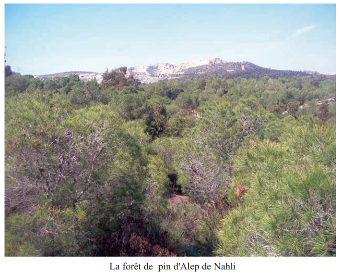
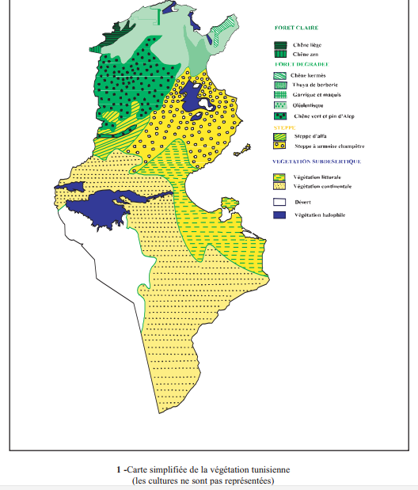
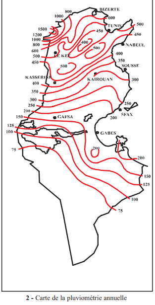
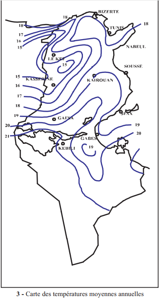
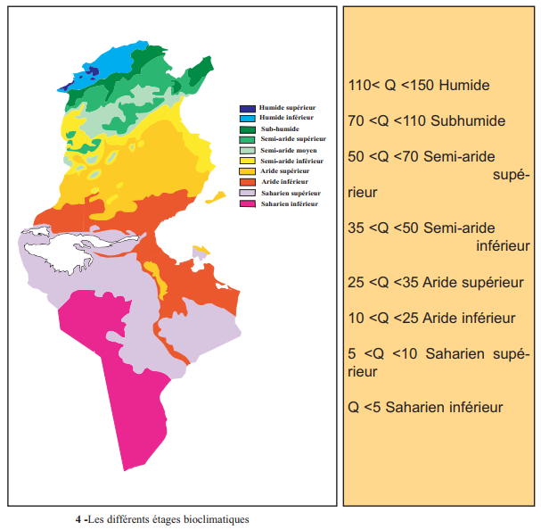
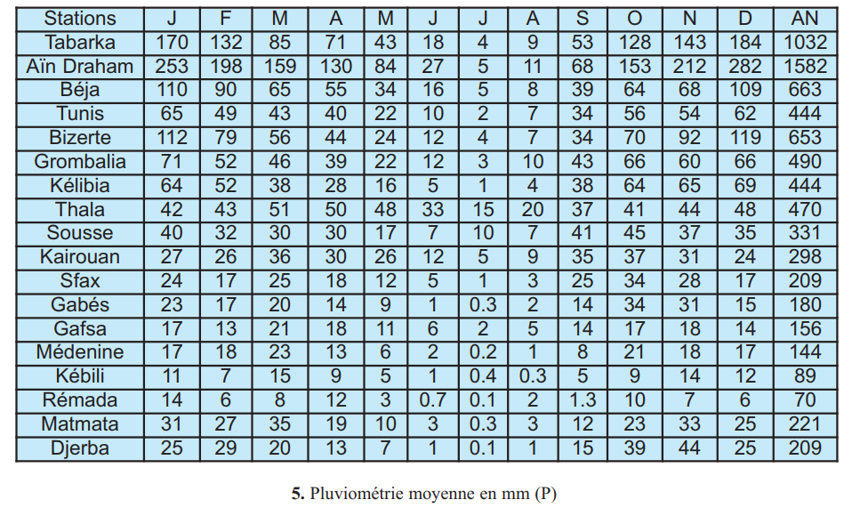
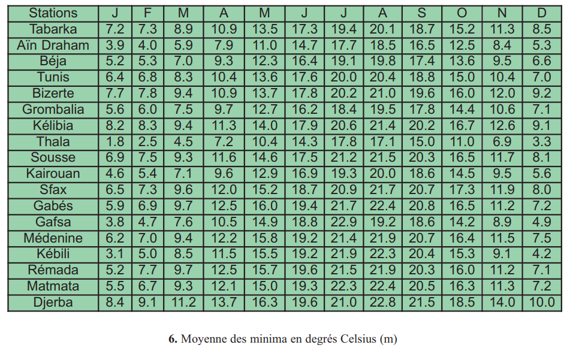
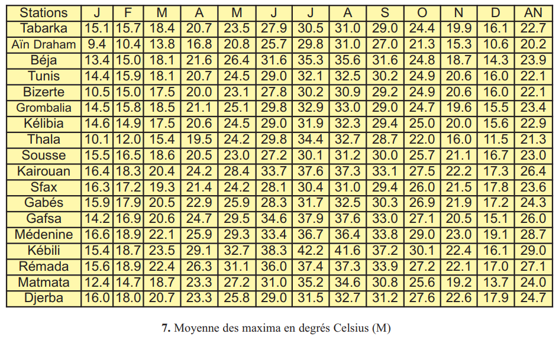
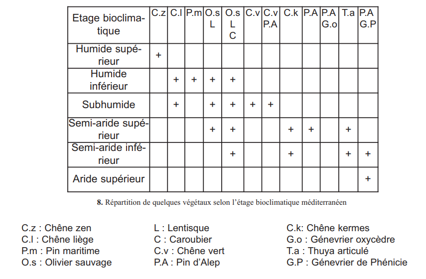

🎯 Pourquoi ce chapitre ?
D'après le programme officiel tunisien (Thème 2, Objectif 3 — p.16), ce chapitre vise à :
📚 Préacquis
- Ch.2 — Les facteurs climatiques (T°, humidité, pluviométrie) influencent le développement et la survie des végétaux.
- Les plantes héliophiles exigent beaucoup de lumière ; les plantes sciaphiles tolèrent l'ombre.
- Les plantes xérophytes sont adaptées aux milieux secs ; les plantes hygrophytes exigent beaucoup d'eau.
- La pluviométrie (précipitations annuelles en mm) et la température sont les deux principaux facteurs climatiques qui définissent un étage bioclimatique.
- En Tunisie, le climat varie du Nord humide (> 600 mm/an) au Sud saharien (< 100 mm/an).

❓ 2 Questions directrices
- Comment la végétation naturelle est-elle répartie en Tunisie ?
- Quels sont les principaux facteurs qui interviennent dans cette répartition ?
🧠 Comprendre avant de mémoriser
Ce chapitre applique les concepts du Ch.2 à l'échelle du territoire tunisien. La logique est simple : le gradient pluvio-thermique Nord→Sud de la Tunisie détermine une succession d'étages bioclimatiques, chacun caractérisé par des espèces végétales indicatrices. Emberger a mis en équation cette relation climat/végétation avec son quotient Q. Maîtriser les étages et les espèces indicatrices est essentiel pour le CAPES.
Clique sur chaque notion · Pièges CAPES et connexions révélés
🗺️ Répartition de la végétation en Tunisie — gradient Nord→Sud
| Zone géographique | Pluviométrie (mm/an) | Type de végétation | Espèces indicatrices |
|---|---|---|---|
| Extrême Nord (Tell) | > 800 mm | Forêt dense | Chêne zen, Chêne liège, Pin maritime |
| Nord (Kroumirie, Mogods) | 600–800 mm | Forêt subhumide | Chêne liège, Chêne vert, Olivier sauvage |
| Nord-Centre (Dorsale) | 400–600 mm | Forêt + maquis | Pin d'Alep, Chêne vert, Lentisque |
| Centre (Hautes steppes) | 200–400 mm | Steppe | Alfa, Romarin, Armoise |
| Sud (pré-saharien) | 100–200 mm | Steppe dégradée | Jujubier, Acacia, Euphorbe |
| Sahara (Extrême Sud) | < 100 mm | Désert | Palmier dattier (oasis), Ephedra |
Alfa : indicateur de climat semi-aride. Aire de répartition : 100 à 600 mm/an. Couvre les hautes steppes du Centre tunisien (Kasserine, Sidi Bouzid, Sbeitla).
📐 Le Quotient Pluviothermique d'Emberger — Q
Q = 2000 × P / (M² − m²)
ou encore : Q = 2000 × P / [(M + m)(M − m)]
| Variable | Signification | Unité |
|---|---|---|
| P | Total des précipitations annuelles | mm |
| M | Moyenne des maxima du mois le plus chaud | °Kelvin = °C + 273 |
| m | Moyenne des minima du mois le plus froid | °Kelvin = °C + 273 |
Exemple de calcul — Bizerte
| P (Bizerte) | 653 mm/an |
| M (mois le plus chaud = août) | 30,9°C → 303,9°K |
| m (mois le plus froid = janvier) | 7,7°C → 280,7°K |
| Q = 2000 × 653 / (303,9² − 280,7²) | = 1 306 000 / 13 603 ≈ 96 |
| Étage bioclimatique | 70 < Q < 110 → Subhumide |
Le quotient Q augmente quand : P augmente (plus de pluie) OU quand (M − m) diminue (moins d'amplitude thermique).
Il diminue quand : P diminue (moins de pluie) OU quand (M − m) augmente (plus d'amplitude thermique → climat plus continental/aride).
🌿 Les étages bioclimatiques et leurs espèces indicatrices
| Étage bioclimatique | Valeur de Q | P (mm/an) | Espèces indicatrices principales |
|---|---|---|---|
| Humide | Q > 110 | > 800 | Chêne zen (C.z), Chêne liège (C.l), Pin maritime (P.m) |
| Subhumide | 70 ≤ Q ≤ 110 | 600–800 | Olivier sauvage (O.s), Chêne vert (C.v), Lentisque (L) |
| Semi-aride supérieur | 50 ≤ Q < 70 | 400–600 | Pin d'Alep (P.A), Caroubier (C), Chêne kermès (C.k) |
| Semi-aride inférieur | 35 ≤ Q < 50 | 200–400 | Thuya articulé (T.a), Genévrier de Phénicie (G.P) |
| Aride supérieur | 25 ≤ Q < 35 | 150–200 | Genévrier oxycèdre (G.o), Alfa |
| Aride inférieur | 10 ≤ Q < 25 | 100–150 | Alfa, Armoise, Romarin |
| Saharien supérieur | 5 ≤ Q < 10 | 50–100 | Jujubier, Acacia |
| Saharien inférieur | Q < 5 | < 50 | Palmier dattier (oasis), végétation très clairsemée |
⚠️ 3 Pièges classiques CAPES
🔗 Connexions avec le manuel
Les adaptations à la température et à l'eau (Ch.2) expliquent directement pourquoi chaque espèce est présente dans un étage et absente dans un autre.
Les étages bioclimatiques définissent en quelque sorte des "biotopes régionaux". Chaque étage a sa biocénose végétale caractéristique.
La flore de chaque étage bioclimatique détermine la faune associée. Les chaînes alimentaires (Ch.4) varient selon l'étage.
L'action humaine (surpâturage, déforestation) dégrade les étages bioclimatiques. La gestion durable vise à préserver la végétation climacique de chaque étage.
💭 Questions de réflexion
M² = 94 494,76 · m² = 75 515,04 · M² − m² = 18 979,72
Q = 2000 × 470 / 18 979,72 = 940 000 / 18 979,72 ≈ 49,5
Étage : 35 ≤ Q < 50 → Semi-aride inférieur
1. Facteurs climatiques et répartition des végétaux



En Tunisie, la pluviométrie (précipitations annuelles) et la température sont les deux facteurs climatiques qui déterminent la répartition des végétaux.
| Végétal | Pluviométrie | Zone en Tunisie |
|---|---|---|
| Chêne liège | 600–1800 mm/an · résiste à −12°C | Kroumirie (Tabarka, Aïn Draham) |
| Chêne vert | 400–600 mm/an | Dorsale tunisienne |
| Pin d'Alep | 300–600 mm/an | Centre-Nord (Nahli, Kesra) |
| Alfa | 100–600 mm/an | Hautes steppes du Centre |
| Romarin | 150–350 mm/an | Steppe semi-aride |
| Jujubier | 50–150 mm/an | Pré-saharien |
1. Le Chêne liège est une espèce indicatrice du climat .
2. L'Alfa est une espèce indicatrice du climat .
3. Les végétaux qui permettent de définir un étage bioclimatique sont appelés des .
2. Notion d'étages bioclimatiques et Quotient d'Emberger
Un étage bioclimatique est une subdivision géographique définie par un climat particulier et abritant des végétaux indicateurs particuliers. Pour délimiter précisément ces étages, Emberger a mis au point un quotient pluviothermique Q.

Q = 2000 × P / (M² − m²)
P = précipitations annuelles (mm) · M et m en °Kelvin (°C + 273)
Données — Stations tunisiennes
| Station | P (mm) | M (°C) | m (°C) |
|---|---|---|---|
| Bizerte | 653 | 30,9 | 7,7 |
| Kairouan | 298 | 37,6 | 4,6 |
| Rémada | 70 | 37,4 | 5,2 |
Résultats Q calculés
| Station | Q calculé | Étage bioclimatique |
|---|---|---|
| Bizerte | ≈ 96 | Subhumide (70<Q<110) |
| Kairouan | ≈ 30 | Aride supérieur (25<Q<35) |
| Rémada | ≈ 8 | Saharien supérieur (5<Q<10) |




M² = 310,6² = 96 472,36
m² = 277,6² = 77 061,76
M² − m² = 96 472,36 − 77 061,76 = 19 410,60
Q = 2000 × 298 / 19 410,60 = 596 000 / 19 410,60 ≈ 30,7
Étage : 25 ≤ Q < 35 → Aride supérieur
Végétation indicatrice : Genévrier oxycèdre, Alfa en limite.
1. Dans la formule d'Emberger, M et m doivent être exprimés en .
2. La station de Bizerte avec Q ≈ 96 appartient à l'étage bioclimatique .
3. Rémada (Q ≈ 8) appartient à l'étage .
📌 Retenons — Étages bioclimatiques et végétation
1Les facteurs climatiques, principalement les , influent sur la répartition des végétaux. Certains végétaux occupent des aires de répartition bien délimitées correspondant à des étages climatiques particuliers : ce sont des .
2Le Chêne liège est indicateur d'un climat . L'Alfa est indicateur d'un climat . Le Jujubier est indicateur d'un climat .
3Les étages bioclimatiques peuvent être déterminés mathématiquement en utilisant le quotient pluviométrique d'. La formule est : Q = où M et m sont exprimés en degrés .
4Selon la valeur de Q : Q > 110 → étage ; 70 < Q < 110 → étage ; 50 < Q < 70 → étage ; Q < 10 → étage .
🃏 Flashcards — Vocabulaire clé du chapitre
✏️ QCM — Format CAPES (1 à 3 bonnes réponses)
Questions du manuel et questions CAPES sur les étages bioclimatiques
📝 Exercices interactifs
Q1. Les facteurs qui influencent principalement la répartition des végétaux en Tunisie sont :
Q2. Le Chêne liège est une espèce indicatrice du climat :
Q3. Dans la formule Q = 2000P/(M²−m²), M et m sont exprimés en :
🌿 Ex.1 — Associer chaque végétal à son étage bioclimatique
| Espèce indicatrice | Code | Étage bioclimatique |
|---|---|---|
| Chêne zen | C.z | |
| Chêne liège | C.l | |
| Olivier sauvage | O.s | |
| Pin d'Alep | P.A | |
| Genévrier de Phénicie | G.P |
📐 Ex.2 — Calculer le quotient Q d'Emberger pour Kairouan
On convertit d'abord en Kelvin : M = 37,6 + = 310,6°K et m = 4,6 + 273 = .
On calcule M² − m² = 310,6² − 277,6² = 96 472 − 77 062 = .
Q = 2000 × 298 / 19 410 = 596 000 / 19 410 ≈ .
Kairouan appartient à l'étage bioclimatique .
La végétation indicatrice attendue à Kairouan est .
🗺️ Ex.3 — Classer les étages du Nord au Sud de la Tunisie
| Ville / Région | Pluviométrie approx. | Étage bioclimatique | Végétation indicatrice |
|---|---|---|---|
| Aïn Draham | 1582 mm/an | ||
| Bizerte | 653 mm/an | ||
| Kairouan | 298 mm/an | ||
| Rémada | 70 mm/an |